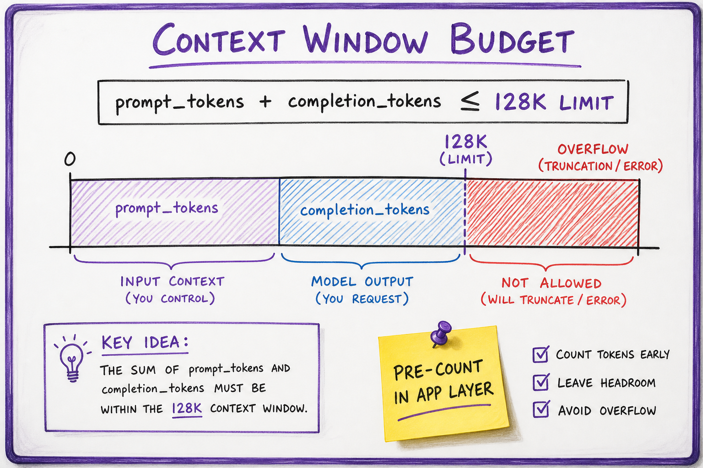

Tokenization & Context Window // Fundamentals
Text becomes subword token IDs before any transformer sees it. BPE merges drive vocabulary; context window caps prompt+completion; miscounting tokens is the #1 production billing and overflow bug.

Raw text through tokenizer to ID sequence, budget check against model limit, then prefill into the LM.
01 — What & Why
Tokenization maps Unicode text to integer IDs from a fixed vocabulary (32K–256K). The context window is the maximum tokens the model can attend to in one forward pass. Every API bill and overflow error starts here.
01a — Core Concepts
| Term | Definition | Gotcha |
|---|---|---|
| BPE | Iteratively merge frequent byte pairs | Different tokenizer = different token count for same string |
| cl100k_base | GPT-4 family BPE encoding | Use matching tiktoken encoding for counts |
| Special tokens | <|endoftext|>, tool markers, pad | Reserved IDs; don't appear in user text raw |
| Context window | Max input + output tokens | 128K advertised ≠ cheap at full length |
| Chars/token | ~4 English, ~2 CJK rough avg | Code and JSON are token-expensive |
01b — API Surface
import tiktoken
enc = tiktoken.encoding_for_model("gpt-4o")
text = "How many tokens is this?"
ids = enc.encode(text)
print(len(ids), ids[:10])
# Anthropic: client.messages.count_tokens(...)
# HF: tokenizer.encode(text, add_special_tokens=True)02 — When to Use / When NOT
| Approach | Use | Alternative |
|---|---|---|
| Pre-count tokens client-side | Always before large prompts | Hope API 400 error (bad UX) |
| Truncate middle of long chat | Keep system + recent turns | Summarize history instead |
| Character-based chunking for RAG | Quick prototype | Token-aware chunking for boundary quality |
03 — Architecture
text ──► Normalizer (NFC) ──► BPE encode ──► [id_1..id_n]
──► if n + max_completion > limit: truncate / summarize / reject
──► prefill(ids) ──► decode loop04 — Deep Dive: BPE
Start with bytes; repeatedly merge most frequent adjacent pair until vocabulary size reached. "unhappiness" may become ["un","happiness"] depending on training corpus.
05 — Deep Dive: Token Counting
def estimate_cost(prompt: str, model: str, max_out: int) -> int:
enc = tiktoken.encoding_for_model(model)
p = len(enc.encode(prompt))
return p + max_out # check against model limit06 — Deep Dive: Truncation
- Head+tail: keep system prompt + last K turns
- Summarize: compress middle history with cheap model
- Map-reduce: chunk docs, partial answers, merge
07 — Multilingual
CJK and emoji often consume more tokens per character than English. Always benchmark tokenizer on target locales.
08 — Special Tokens
Chat templates insert role tokens (<|im_start|>user). Tool calling adds schema tokens. Changing template between train and serve causes skew.

Byte-pair merge table builds subword vocabulary.

prompt_tokens + completion_tokens must fit model max.
09 — Production & Ops
- Cache token counts per document hash
- Alert when p95 prompt > 80% of window
- Log tokenizer version with each request
10 — Where It Shows Up
AI vertical
11 — Common Pitfalls
- Assuming chars ≈ tokens for billing
- Wrong encoding for model family
- Silent truncation dropping system instructions
- Pasting huge PDFs without chunking